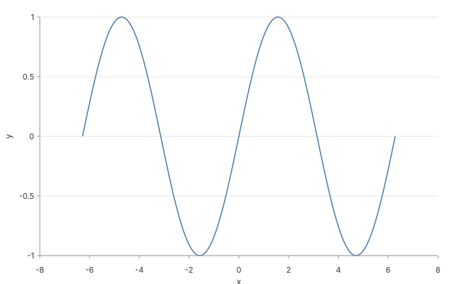
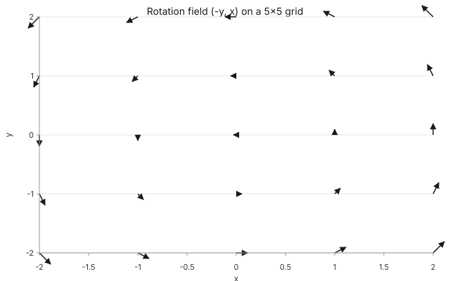

What's new in Glyph
Four tracks closed in the last three rounds: typed Python bindings with Jupyter integration, a function-shape data source + a vector-field mark for mathematical visualization, a paste-CSV-edit-spec-share-by-URL browser playground, and a GitHub Action that posts a sticky audit comment on every pull request. Each one ships behind round-tripped tests against the real MCP server — no mocks.
Python bindings — pandas to chart in one line
glyph-charts ships 12 typed wrappers around the MCP
server's verbs. Every wrapper returns a frozen dataclass with a
.raw passthrough so callers stay forward-compatible
with any field the server adds later. The runtime owns a daemon
asyncio loop on a worker thread — so notebooks, Streamlit apps, and
any other already-running event loop can call
glyph.render() without "loop already running" errors.
Render a DataFrame
import pandas as pd import glyph df = pd.read_csv("rides.csv") result = glyph.render( {"layers": [ {"mark": "bar", "encoding": {"x": "pickup_hour", "y": "rides"}} ]}, data=df, ) result.save_svg("rides.svg") # In Jupyter, just evaluate `result` — # _repr_svg_ + _repr_mimebundle_ render inline. result
Inline pandas via data=df is registered
server-side through glyph_import; no temp files.
Audit, anomaly, decompose, forecast
# Every verb returns a typed dataclass findings = glyph.audit_spec(spec) for f in findings: print(f.rule_id, f.severity, f.message) outliers = glyph.anomaly( result.handle, value_field="revenue", group_field="segment", threshold=2.0, ) ranked = glyph.decompose( result.handle, metric_field="revenue", factors=["segment", "region"], ) projection = glyph.forecast( result.handle, x_field="hour", y_field="rides", horizon=3, )
result.handle threads through every diagnostic
verb — same in-memory DuckDB view, no re-reads.
Function-shape data + vector-field mark
A new data.shape: "function" samples
y = f(x) directly in the compiler — no CSV, no
linspace. Add a parameter block plus
xExpr / yExpr and the same shape draws
arbitrary parametric curves. The new vector-field mark
ships through a pluggable mark registry — 9 cartesian marks now
route through it while 431 existing snapshots stay byte-identical.

Sine wave — scalar function
{
"data": {
"function": {
"shape": "function",
"x": { "min": -6.283, "max": 6.283, "samples": 200 },
"expr": "sin(x)"
}
},
"layers": [{ "mark": "line", "encoding": { "x": "x", "y": "y" } }]
}
![Lissajous curve x = sin(3t), y = cos(2t) sampled 400 times on [0, 2π]](./lissajous.svg)
Lissajous — parametric function
{
"data": {
"function": {
"shape": "function",
"parameter": { "name": "t", "min": 0, "max": 6.283, "samples": 400 },
"xExpr": "sin(3*t)",
"yExpr": "cos(2*t)"
}
},
"layers": [{ "mark": "point", "encoding": { "x": "x", "y": "y" } }]
}

Vector field — new mark
{
"title": "Rotation field (-y, x)",
"data": { "source": "inline:vector-field-rotation" },
"layers": [{
"mark": "vector-field",
"encoding": {
"x": { "field": "x" },
"y": { "field": "y" }
}
}]
}

Composition — function + scrub animation
// One frame from a scrubbable spec. // The data shape produces the rows; // the animation block decides which // `t`-slice the renderer paints. // Result: a parametric curve that // "draws itself" frame by frame — // no special-case code in the // compiler. The thesis Math Phase 1 // set out to validate.
Playground — paste CSV, share by URL or Gist
The browser playground compiles specs in-tab via the WASM bundle —
no server. CSV up to 10 MB and specs up to 1 MB hydrate from a
pako-compressed #h= hash. Click
Save to Gist and an anonymous Gist captures the full
state for sharing — graceful fallback to a clipboard-and-open-tab
flow when GitHub rate-limits anonymous Gist creation.
Data
hour,rides 0,42 1,38 8,260 17,240
Spec
{
"data": { "source": "csv://uploaded" },
"layers": [
{ "mark": "bar",
"encoding": { "x": "hour", "y": "rides" } }
]
}
Chart
Audit Trust 92
- AUDIT-01 — y-axis starts at 0
- AUDIT-04 — aggregation ratio healthy
- AUDIT-06 — discrete palette nominal
Audit-on-every-PR GitHub Action
Drop in seanhanca/glyph-audit-action@v1 and every pull
request gets a sticky comment showing the spec diff, audit
findings, trust score, and before/after renders side-by-side. The
comment updates in place across pushes — one anchor marker on a
hidden HTML comment, paginated lookup with marker-prefixed match,
update or create.
Workflow setup
Copy this into .github/workflows/glyph-audit.yml:
name: Glyph audit on: pull_request jobs: audit: runs-on: ubuntu-latest permissions: # contents: write lets the action push rendered SVGs to an # orphan .glyph-audit branch so the PR comment can embed them. contents: write pull-requests: write steps: - uses: actions/checkout@v4 with: { fetch-depth: 0 } - uses: actions/setup-node@v4 with: { node-version: "20" } - run: npm install -g @glyph/cli@0.1 - uses: seanhanca/glyph-audit-action@v1 with: spec-pattern: "**/*.glyph.json" glyph-version: "0.1" fail-on: error comment-mode: sticky
Glyph audit Trust 92 ▲ from 78 on the previous commit
revenue-by-segment.glyph.json· 1 spec changed, 3 audit findings (1 high, 1 medium, 1 low).AUDIT-01AUDIT-04AUDIT-06<!-- glyph-audit-action:sticky -->) and updated in place on every push — no spam, no thread noise.